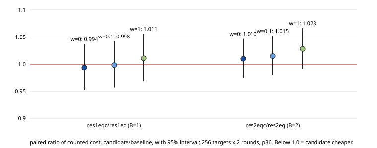

Class: engineering, not met (C1 fails). Goal (IC near rho parity) is not met: res1eq is 1.60 × matched rho at w=0, 1.80 × at w=0.1 and 2.70 × at w=1 (harness band, this run).
Change: residual-fused-eq-chain restarts each walk at previous start + random jump (one addition) instead of two scalar multiplications. Prediction (PROTOCOL.md, frozen before data): at most about 3% saving, since restarts were ≈2.6% of cost and the exact two-relation collision floor is 1.5 × rho (res1eq is within about 6% of it).

| paired ratio | w=0 | w=0.1 | w=1 |
|---|---|---|---|
| res1eqc/res1eq (B=1) | 0.9938 [0.9525, 1.0368] | 0.9984 [0.9567, 1.0420] | 1.0110 [0.9680, 1.0558] |
| res2eqc/res2eq (B=2) | 1.0100 [0.9746, 1.0467] | 1.0149 [0.9791, 1.0520] | 1.0280 [0.9911, 1.0663] |
C1 needs the upper 95% bound below 1 at all three prices. B=1: upper bounds 1.037, 1.042, 1.056; B=2: 1.047, 1.052, 1.066. C1 not met; the point estimates (0.994 at w=0, 1.011 at w=1 for B=1) are inside the noise of 256 paired targets (about ±4%). The predicted ≈0.97 is not distinguishable from 1 and not supported.
| ratio | w=0 | w=0.1 | w=1 |
|---|---|---|---|
| rho→res1eq | 1.6011 [1.5185, 1.6882] | 1.8000 [1.7069, 1.8981] | 2.6958 [2.5556, 2.8438] |
| rho→res1eqc | 1.5911 [1.5123, 1.6740] | 1.7972 [1.7080, 1.8911] | 2.7254 [2.5893, 2.8687] |
| rho→res2eq | 2.0236 [1.9211, 2.1316] | 2.2744 [2.1590, 2.3959] | 3.4039 [3.2303, 3.5867] |
| rho→res2eqc | 2.0439 [1.9430, 2.1500] | 2.3083 [2.1941, 2.4284] | 3.4991 [3.3252, 3.6821] |
res1eqc at w=0 is 1.591 × rho, 1.06 × the 1.5 floor; priced (w=1) it is 2.73 × because the per-step canonicalisation/orientation work is charged like rho's. An earlier draft of the Iso Lab replay report (PR #3235) quoted 1.06 × for res1eq at w=1; that came from an approximation that left the IC arms' uncharged counters out and is wrong. The numbers above are the harness band.
ecbench verify --replay 12: audit OK, 12 replays reproduced, 0 problems.Evidence: research/ic_res1eq_chain_20261101/ (PROTOCOL.md, specs-local, sessions/E-p36, analysis/).